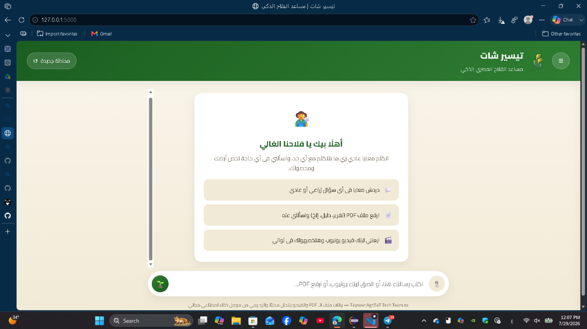
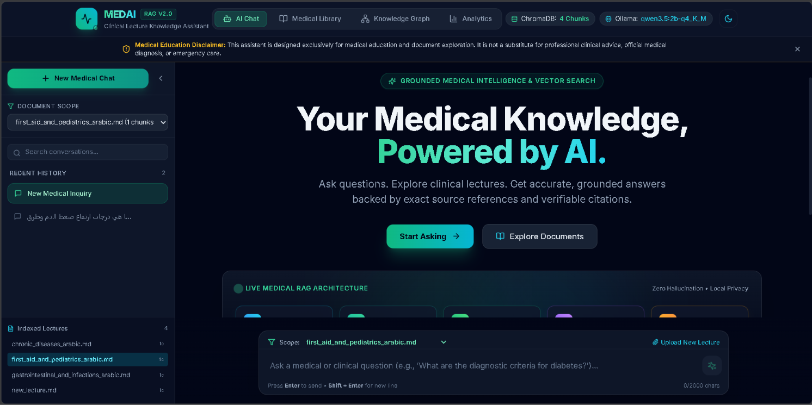
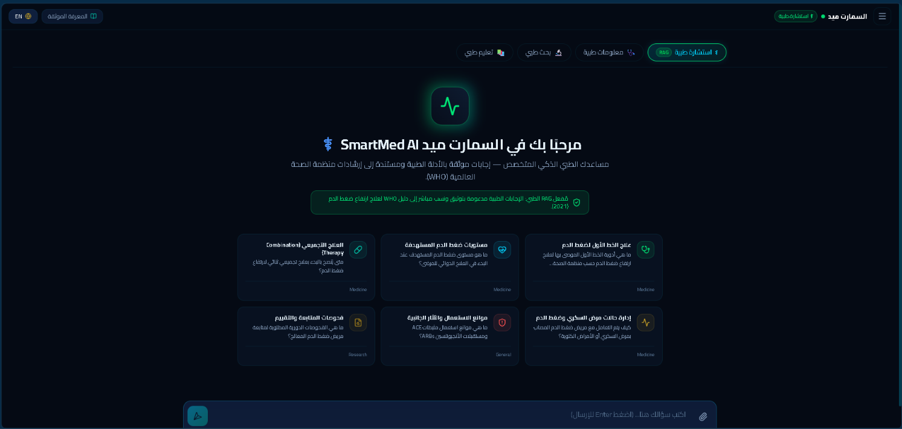
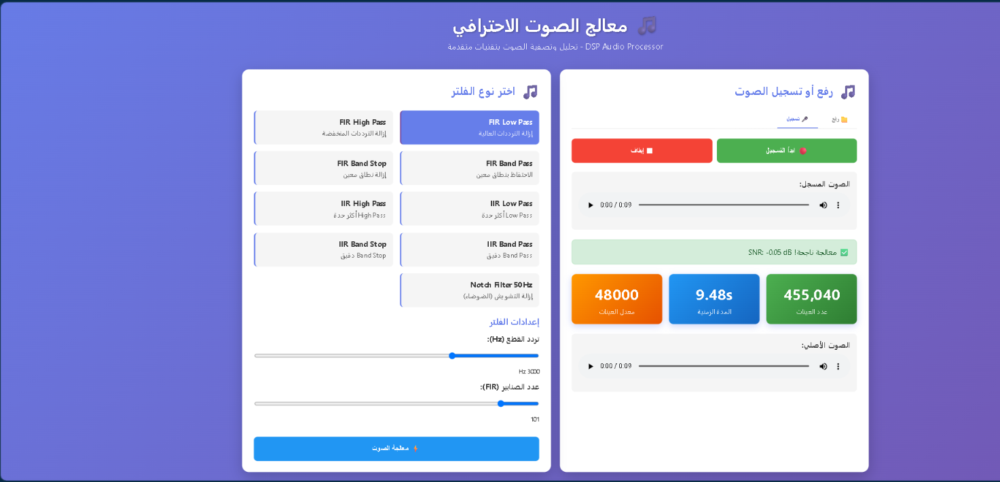
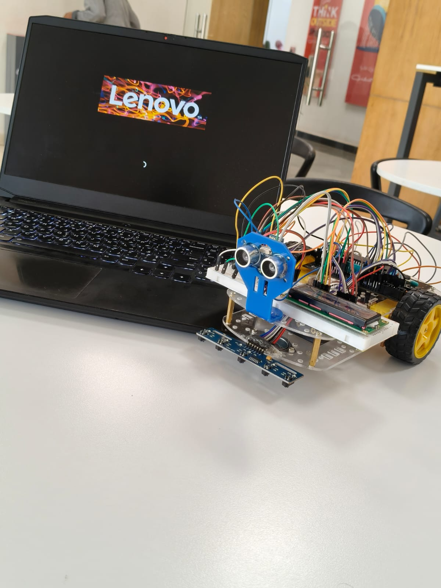

LOCAL AI · RAG01 / AGRICULTURE AI
↗Tayseer AgriSaT Chat
A domain-focused agricultural assistant concept combining document retrieval, local-first workflows, and farmer-friendly interaction.
Different problems, same approach: explore the idea, build a working version, and keep improving it.

LOCAL AI · RAGA domain-focused agricultural assistant concept combining document retrieval, local-first workflows, and farmer-friendly interaction.

LLM · KNOWLEDGEA prototype for asking questions about provided learning documents with retrieval and source references. Not a clinically validated tool.

AI ASSISTANTAn interface concept for exploring health-information questions through a structured assistant experience and source-oriented answers.

SIGNAL PROCESSINGAn interactive audio-processing project exploring FIR/IIR filters, waveform processing, and audio measurements.

EMBEDDED · ROBOTICSA hands-on robotics setup with a microcontroller, ultrasonic sensor, motor driver, and wired hardware components.
An optimization project exploring Particle Swarm Optimization and Grey Wolf Optimization methods.
A conversational NLP project focused on building a chatbot experience and connecting language processing with a usable interface.